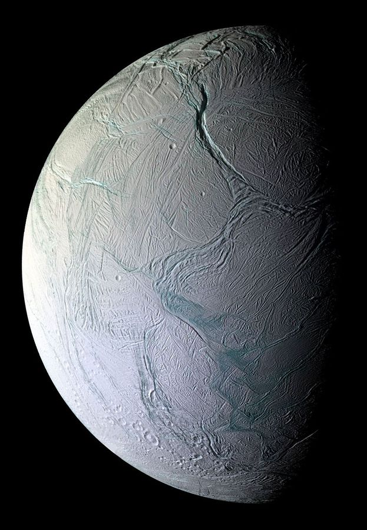
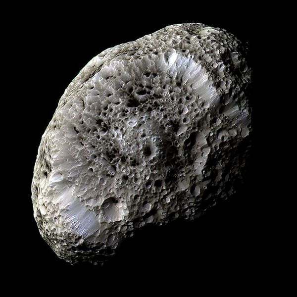
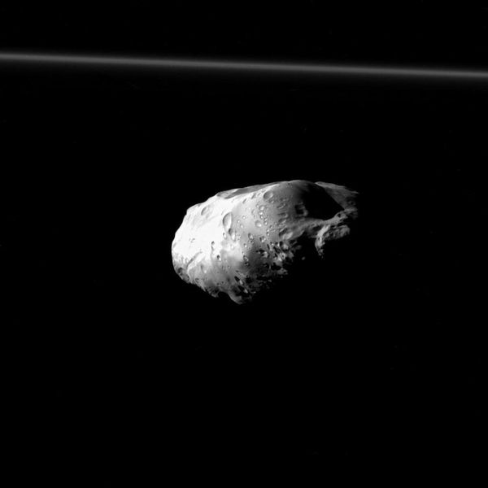
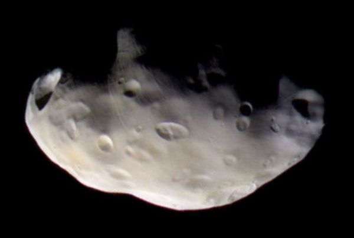
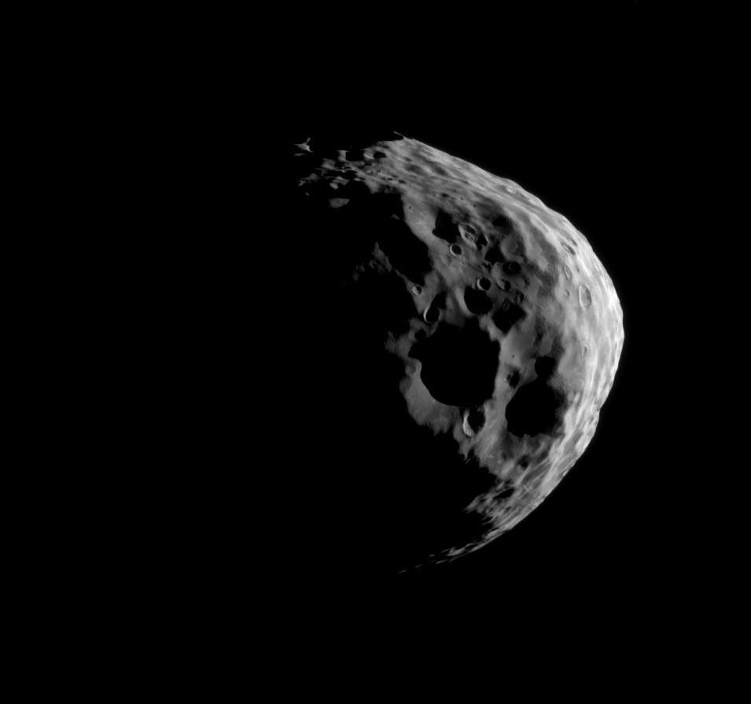
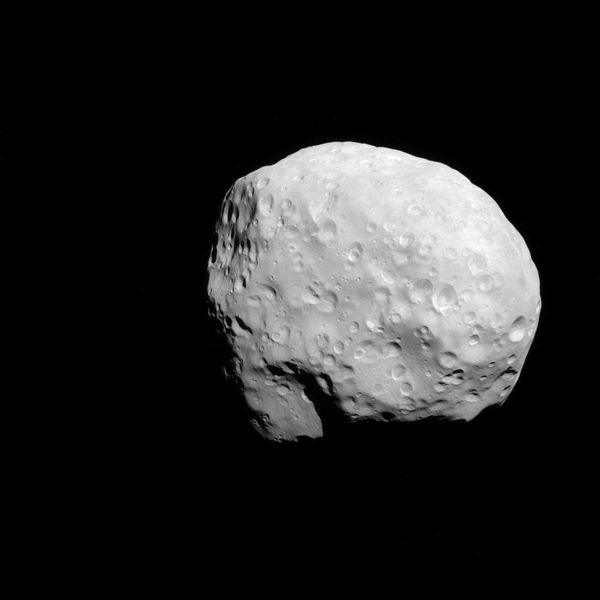
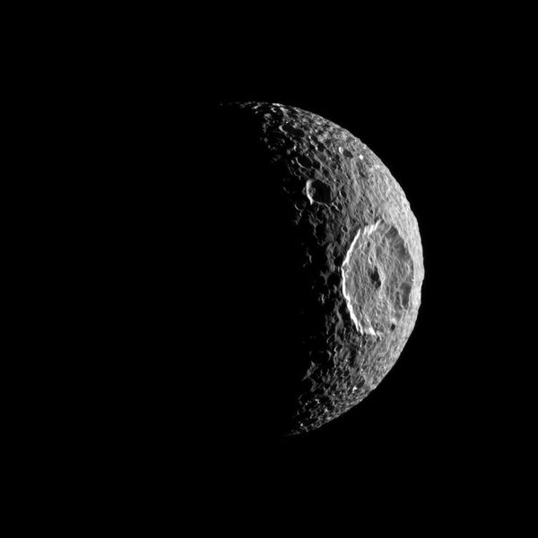
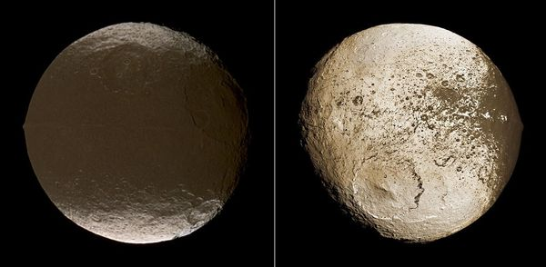
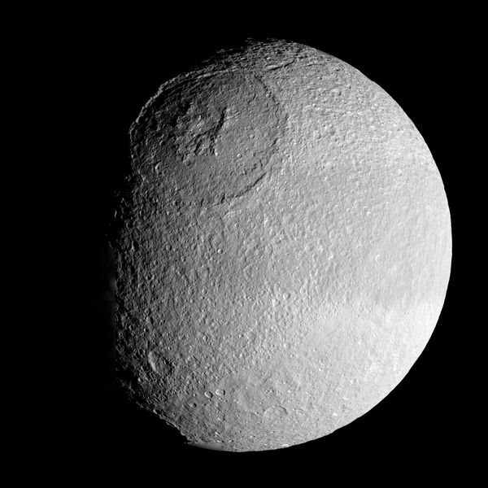
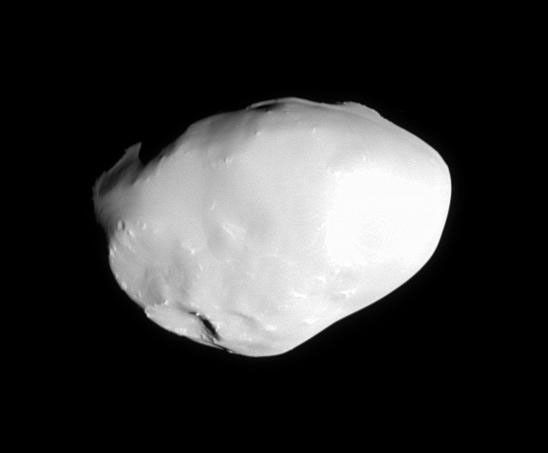

Saturn
Saturn is the sixth planet from the Sun, and the second largest in the solar system. It's surrounded by beautiful rings.
Fun facts about Saturn
While Saturn is the 2nd largest planet in our solar system. One of it's moons, Titan, is larger than the planet Mercury.
Saturn has 293 moons in it's orbit (as of August 2026). In a later section, we have chosen to feature 12 of Saturn's many moons.
There is a large spinning hexagon in Saturn's northern hemisphere. It was discovered in the 1980s. This massive vortex acts as a hurricane, but on both a larger and faster scale than that of our own hurricanes!
Exploring Saturn
The small moon Enceladus has a global ocean under a thick, icy shell. Scientists have identified both moons as high-priority science destinations for future deep-space missions.
The Moons of Saturn
-
Titan
-
Enceladus
-
Hyperion
Prometheus
-
Pandora
-
Janus
Epimetheus
-
Mimas
-
Iapetus
-
Phoebe
-
Tethys
-
Telesto












Resources
Sources
https://science.nasa.gov/saturn/
https://science.nasa.gov/mission/cassini/science/saturn/hexagon-in-motion/
https://science.nasa.gov/saturn/moons/